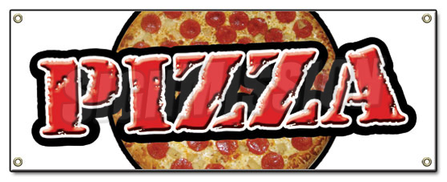

Papa Ray's Sports Bar and Casino
Come on in, Ray is always watching the big game with his sons Nevan and Quinn and his wife Debbie. Along with being a sports bar, Papa Ray's also is home to Ray's famous pizza. Made with only the freshest ingredients Ray's sour dough, thin-crust pizza is the most reknowned pizza in the entire Montana City and Clancy area. Papa Ray's is also home to the largest selection of Casino Games in Montana City. What are you waiting for? Come pay us a visit because you are always welcomed at Papa Ray's.
About Us - The Menu - The Bar - The Casino - Contact Info 
Papa Ray's Sports Bar
999 Jackson Creek Rd.
Montana City, Montana 59634
(406) - 449 - 4846
Last updated on
June 20, 2013